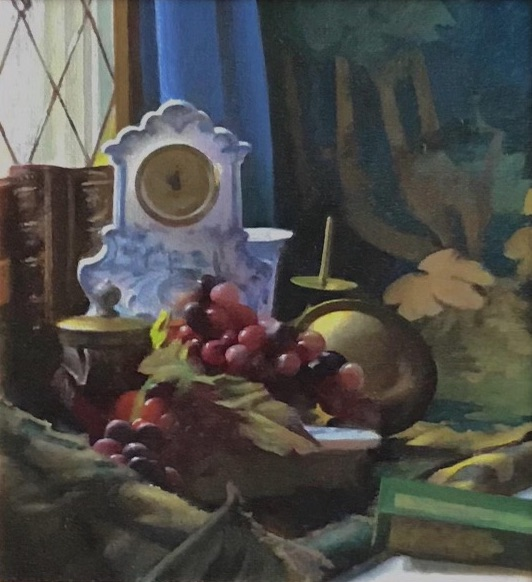

Important Paintings

Paul Ingbretson, American
Old Delft

Paul Ingbretson, American
Warm and Cool

Paul Ingbretson, American
Variations in Amber and Green

William McGregor Paxton, American
Tea Leaves
1909
oil on canvas
↑91.6 →71.9 cm
Metropolitan Museum of Art, New York, USA

Claude Monet, French
La Gorge de Varengeville
1897

Claude Monet, French
Matinée sur la Seine
1897
oil on canvas
↑82.0 →93.5 cm
Hiroshima Museum of Art, Hiroshima, Japan
James Abott McNeill Whistler, American
Arrangement in Flesh Colour and Black:
Portrait of Theodore Duret
1883
James Abott McNeill Whistler, American
Nocturne in Grey and Gold: Chelsea Snow
1876

Johannes Vermeer, Dutch
Mistress and Maid
1667
oil on canvas
↑90.2 →78.4 cm
Frick Collection, New York, USA

Johannes Vermeer, Dutch
A Maid Asleep
1656–57
oil on canvas
↑87.6 →76.5 cm
Metropolitan Museum of Art, New York, USA

Peter Paul Rubens, Flemish
The Descent from the Cross
1612-1614
oil on panel
↑420.5 →320 cm
Cathedral of Our Lady, Antwerp, Belgium

Hans Holbein the Younger, German, Swiss
Portrait of Sir Thomas More
1527
oil on oak
↑74.2 →59 cm
Frick Collection, New York, USA

Giovanni Bellini, Italian
St. Francis in Ecstasy
1480
oil on panel
↑124.6 →142 cm
Frick Collection, New York, USA